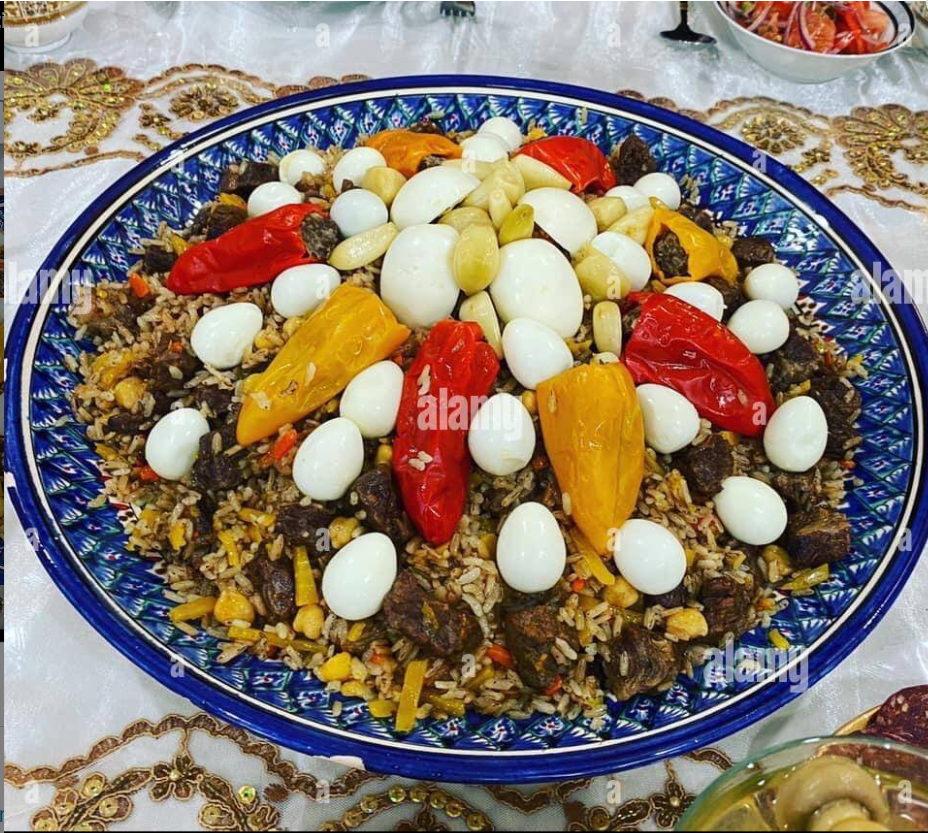

Palov

Description
What is the dish?
Palov (plov or pilaf) is a very popular rice dish throughout Uzbekistan;
there are more than 120 different recipes, but you can only get tuy palov in Tashkent,
where I live. Although the ingredients wherever you go are pretty similar – oil, meat,
onion, carrots and rice – in our variety, you add chickpeas and raisins.
I'd say this is the most famous and desirable food in Uzbekistan, a real signature dish.
That's why tuy palov is not just eaten by people from the markets and restaurants,
it's the centrepiece of weddings, parties and holidays.
Ingredients:
- 150ml oil
- 500g of meat, such as lamb, cut in big pieces
- 2 large onions, peeled and sliced
- 400g yellow carrots, peeled and cut into long, thin strips
- 150g raw chickpeas, soaked for at least for 8 hours, then washed well
- 600ml cold water
- 2 heads of garlic
- 100g raisins, washed
- 2 tbsp turmeric
- 1 tbsp cumin seeds
- 1 tbsp ground coriander
- 1 ½ tbsp salt
- 300g long-grain rice
Steps:
- Heat the oil and fry the meat until browned.
Add the onions, then continue frying until softened.
- When the onions are pale brown, add in the carrots.
Fry until the carrots are half cooked, then add the water.
- Tip the chickpeas in while the water is cold, or else they will remain hard.
Bring to the boil, reduce the heat, add the heads of garlic and
let it simmer for 50 minutes.
- Next add the raisins, continue to cook for 10 minutes,
then add the turmeric, cumin, coriander and salt,
and simmer for another 10 minutes.
- Take out the garlic and add the rice, layering it evenly on top of the carrots,
then add enough water to cover the rice by 1 inch. Turn the heat on high,
and let the water evaporate – don't forget to check for saltiness.
Stir the top of the rice and close the lid, reducing the heat to very low.
- After 20 minutes, open the lid, and again mix only the top of the rice,
replace the lid and cook for another 10 minutes. After your rice is soft,
take the saucepan off the heat and mix carefully.
Serve and enjoy this heavenly tasty meal - yoqimli ishtaha!
Enjoy your delicious homemade palov!